氣功ビデオ講座 4月号
腕から、氣を通す。補と瀉（ほとしゃ）の基本
氣を動かすのに欠かせないのが「意念」です。
肩甲骨から動かすコツと、意識を向ける練習を、動画でていねいに学びます。
- 形式動画講座
- 収録時間約27分
- 準備立てるスペース
立ち方から始めたい方は 3月号「氣功を始める第一歩（立ち方）」 へ
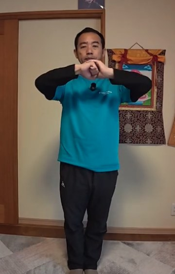
こんなこと、ありませんか？
- 氣功をやっても、本当に氣が動いているのかわからない
- 腕や手を動かしても、腕の力だけでやっている気がする
- 「氣感（氣を感じる感覚）」が、まだつかめない
- 立ち方を覚えたので、次の一歩に進みたい
氣を動かすには、形と、もう一つ、「意念」という考え方が欠かせません。
補と瀉の考え方
氣を「出す」瀉、
氣を「入れる」補
自分の氣が外へ出ていくことを瀉（しゃ）、外の氣が自分の中へ入ってくることを補（ほ）と言います。氣功では、これを意図的に行います。
氣功と、ただの運動の違いは、意念があるかないかです。東洋医学や鍼灸でも大切にされている言葉に、「意至れば氣至る」があります。意識があるところに、氣は集まります。
この講座では、その入り口として、腕の氣を通す練習をします。氣は最初から「はっきりわかる」ものではありません。「ちょっと温かいかも」という小さな変化に気づくことが、最初の練習です。
この講座で学ぶこと
6つのステップで、
腕の氣を通していきます
-
1
労宮（ろうきゅう）をひらく
手のひらの真ん中にある「労宮」は、体の中でも氣の出し入れがしやすい場所です。ここを使って氣を出し入れします。手のひらから指先にかけて、温かさやじんわりした感覚が出てくることがあります。
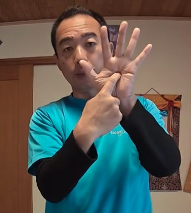
労宮の位置（手のひらの真ん中） -
2
補と瀉の手の形をつくる
最初のポイントは、指先の高さをいつも肩と同じにすること。肘は外に開かず、下に下げます。手首を下げて押す「瀉」、指先を前に倒して引く「補」。それぞれの形を確かめます。
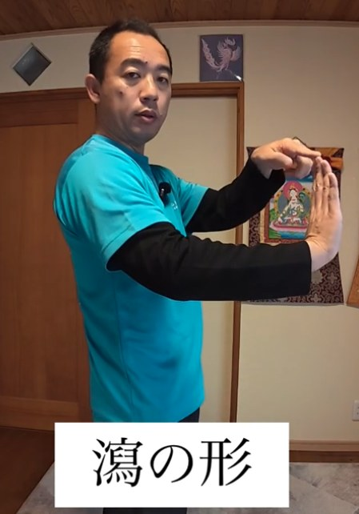
瀉の形 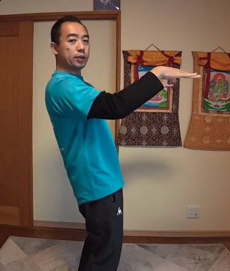
補の形（指先は肩の高さ） -
3
腕でなく、肩甲骨から動かす
腕だけでやろうとしないことが、いちばん大切です。肩甲骨を前に出すと腕は自然に前へ伸び、肩甲骨を背骨側に寄せると腕が引かれます。腰やお腹の力は抜いて行います。
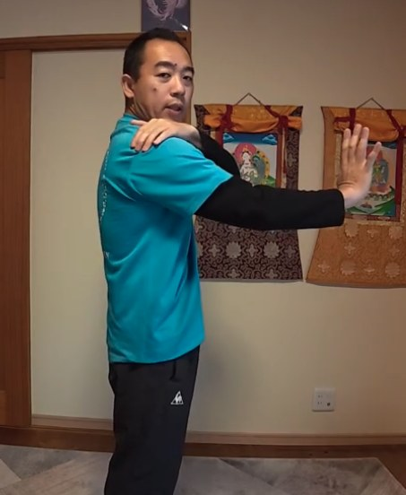
肩甲骨から前へ（瀉） 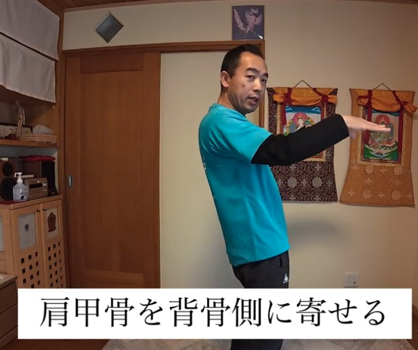
肩甲骨を背骨側に寄せる（補） -
4
意念を練習する：指先の一点に意識を置く
「意至れば氣至る」を、自分の手で確かめます。指先の一点だけを見て意識を置く。意識が向きにくいときは、指先を軽く押したり、指先と指先を合わせて圧をかけたりして、感覚を入れる方法もお伝えします。
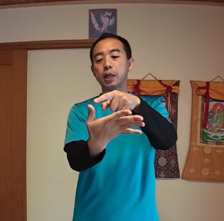
指先の一点を見る 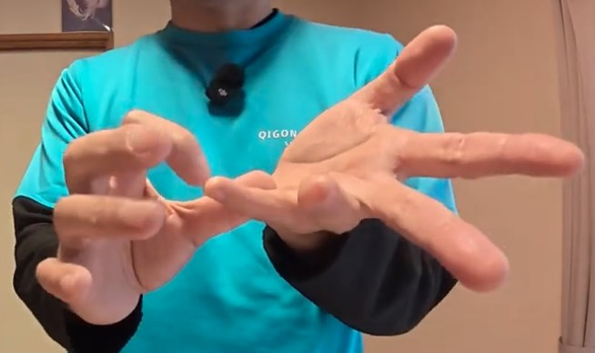
指先と指先を合わせる -
5
手首をほぐして、補と瀉を続ける
手首と腕をゆるめてから、ここまでの練習をつなげます。「指先から肩に補」「肩から労宮に瀉」と頭の中で思いながら、動きを止めずに続けます。指先を前に倒して、両腕を左右に開く動きにも進みます。
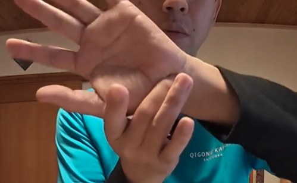
手首をほぐす 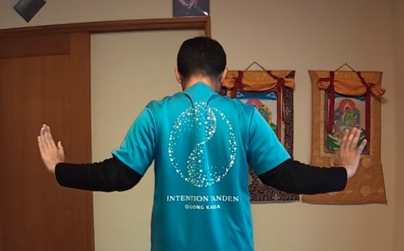
両腕を左右に開く（後ろから） -
6
収功：氣を丹田に収める
最後に、周りの氣を集めて、おへその下にある丹田に収めます。頭のてっぺんから体の中心を通して、丹田へ。意識したところに氣が集まる、という感覚を確かめて終わります。
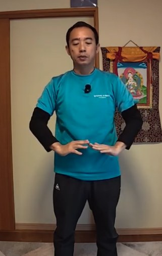
収功（手を丹田に収める）
この講座の特長
動画だから、動きの「流れ」と「感覚の探し方」が伝わります
形と意念を、セットで
手の形だけでなく、「どこからどこへ氣を動かすか」という意念の使い方まで、一緒に練習できます。
肩甲骨の動きが見える
腕でなく肩甲骨から動かす、というコツを、横や後ろからの動きで確かめられます。
小さな変化に気づく練習
「ちょっと温かいかも」という小さな変化の見つけ方から、少しずつ氣感を育てていきます。
1回、2回では分からなくても、
少しずつ積み上げていく。
講師
神田 一郎（かんだ いちろう）
富士山のふもとで、氣功を教えています。リハビリの現場での経験と、ご自身の体と向き合ってきた歩みを土台に、「なんでもOK、オールOK」の気持ちで、無理なく続けられる氣功をお伝えしています。
この講座でも、うまくできているかどうかを気にするより、まずは自分の体の小さな変化に気づくことを大切にしています。
講座の概要
- 講座名
- 氣功ビデオ講座 4月号「補と瀉（腕の氣を通す訓練）」
- 形式
- 動画講座（講師が実演しながら解説）
- 収録時間
- 約27分
- 内容
- 補と瀉の手の形／労宮／肩甲骨の使い方／意念の練習／手首と腕のほぐし／収功
- 準備するもの
- 動画を見ながら立てる広さ
- 価格
- 8,800円（税込）
- 視聴方法
- Vimeo（お支払い完了後、いつでもご視聴いただけます）
- お支払い
- PayPal
氣功ビデオ講座シリーズ
段階を踏んで、少しずつ深めていく
月ごとに、内容がつながっていくシリーズです。4月号は、立ち方の次の一歩になります。
- 3月号氣功を始める第一歩（立ち方）詳細を見る
- 4月号補と瀉（腕の氣を通す訓練）この講座
- 5月号より大きく氣を動かす
- 6月号天地の氣と繋がるための準備
- 7月号天地を繋ぐ その2
- 8月号天地を繋ぐ その3
- 9月号意念と氣の法則と氣感
よくあるご質問
3月号を見ていなくても受講できますか？
受講できます。ただ、氣の通りやすさには立ち方が関わります。立ち方が不安な方は、3月号「氣功を始める第一歩（立ち方）」から始めるのがおすすめです。
氣功が初めてでも大丈夫ですか？
はい。補と瀉の手の形から、肩甲骨の使い方、意念の練習まで、順を追って進めます。
準備するものはありますか？
動画を見ながら立てるスペースがあれば大丈夫です。
購入後は、どうやって視聴しますか？
お支払い完了後、いつでもVimeoでご視聴いただけます。
どんな効果がありますか？
体の感じ方には個人差があります。この講座は、体の使い方を学ぶ内容であり、医療行為や、病気の診断・治療を目的としたものではありません。体調に不安がある方は、無理をせず、医師にご相談ください。